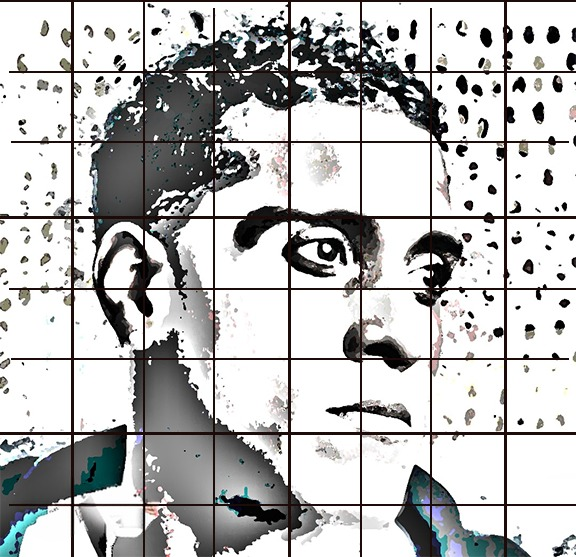
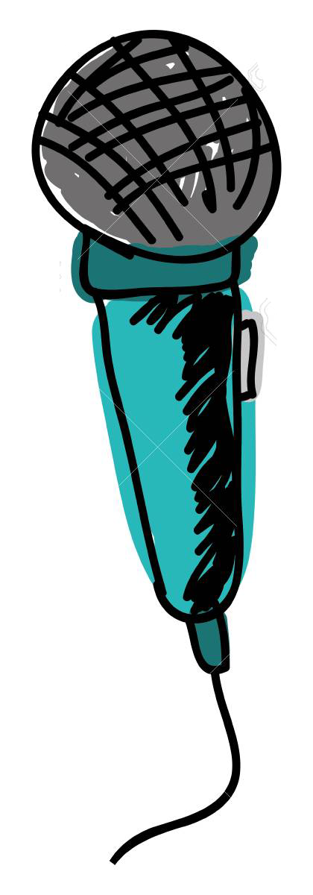

/ /
Mikaben

NOM
Jean Pierre Michael Benjamin (dit Mikaben)

DATE DE NAISSANCE
27 juin 1981

LIEU DE NAISSANCE
Port-au-Prince, Haïti

ORIGINE
Haïtienne
Métier
Chanteur · Compositeur · Réalisateur artistique
Talents
Konpa
Zouk
Dancehall
Fils du chanteur Lionel Benjamin, Mikaben a su créer un son unique mêlant konpa, zouk et dancehall, séduisant Haïti et la diaspora mondiale. Une voix inoubliable portée par une générosité rare sur scène.
Débuts
Baigné dans la musique dès l'enfance grâce à son père, le chanteur Lionel Benjamin, qui lui transmet sa passion pour le konpa et les rythmes haïtiens.
2010
Collabore avec Carimi et d'autres artistes kompa, s'imposant comme l'une des voix les plus prometteuses d'Haïti.
Succès
Titres cultes : On est là, Ou la la, Maji — hymnes de la génération kompa moderne.
2022
Décède le 15 octobre 2022 lors d'un concert à Barcelone. Haïti et le monde entier pleurent une légende.
Identité
Mikaben portait fièrement ses racines haïtiennes dans chaque note, mêlant créole et rythmes kompa dans un style résolument moderne.
Héritage
Sa musique reste un pont entre les générations, rappelant la richesse culturelle d'Haïti à travers le monde.
Gratitude à Ralph ALLEN